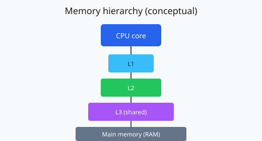

Микроархитектурни нива
Съвременният CPU обикновено има разделни кешове за инструкции и данни на първо ниво (L1 I-cache / D-cache), следвани от унифициран или разделен L2 и споделен L3 между ядрата в един сокет.

Ред на оценяване при липса в кеша
При cache miss контролерът за памет инициира транзакция към по-ниското ниво. Типичната последователност на проверка е:
- L1 — най-малка латентност, най-малък капацитет;
- L2 — компромис между размер и скорост;
- L3 — по-голям, често инклузивен или неинклузивен според дизайна;
- основна RAM и при нужда странична памет.
Ключови термини (речник)
По-долу са дефинирани понятия, които се срещат в анализа на кешовете и кохерентността в многопроцесорни системи.
- Кеш линия (cache line)
- Минималната адресируема единица за прехвърляне между нива; обикновено 64 байта в потребителските CPU от последните поколения.
- Асоциативност
- Брой „начина“, по които даден адрес може да се картотира в множество от линии — например 8-way set associative.
- Заместване (replacement)
- Политика при пълен сет: LRU (приближения), случайно, псевдо- LRU и др.
- Write-through / Write-back
- Синхронно записване към по-ниското ниво срещу отложено „мръсно“ обновяване на линията при изтласкване.
- Кохерентност
- Протоколи като MESI поддържат съгласуван изглед на паметта между ядра и кешове.
Цитат и акцент върху измерването
Производителността на паметта често се свежда до последователност от попадения и пропуски в йерархията — затова профилирането с хардуерни броячи (performance counters) е централно за оптимизация.
За самостоятелно проучване препоръчваме официалните ръководства на производителите на процесори и документацията към инструменти като Linux perf за наблюдение на събития, свързани с кеша.